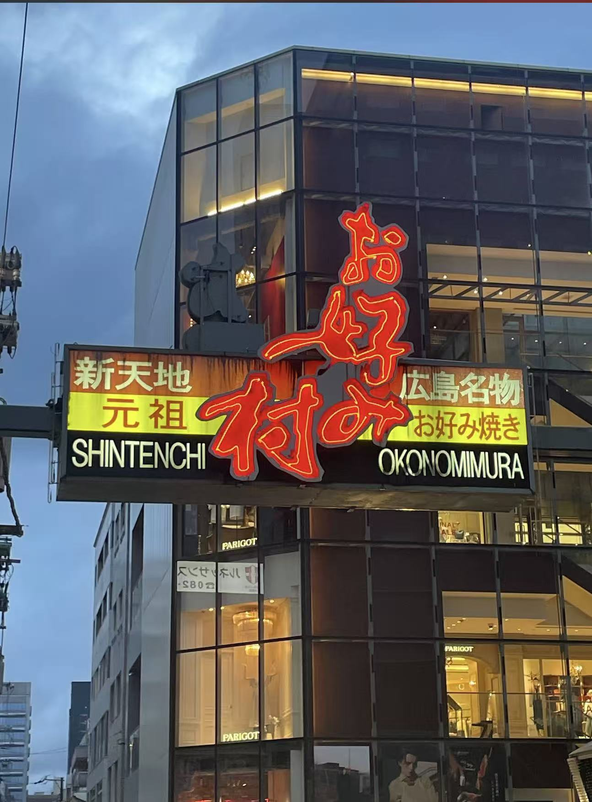
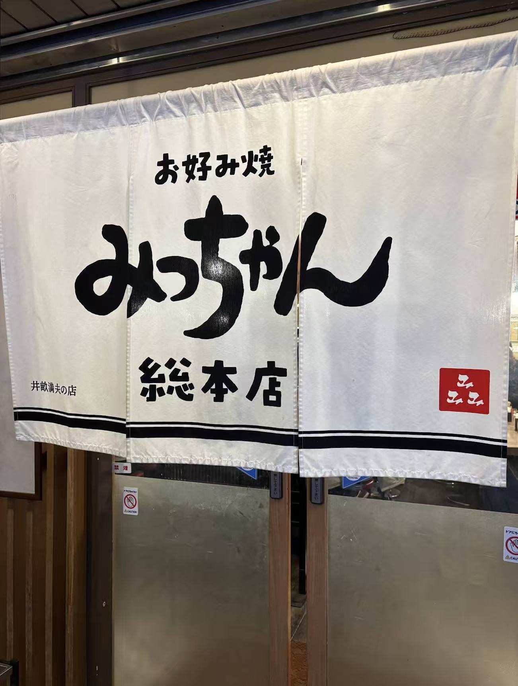
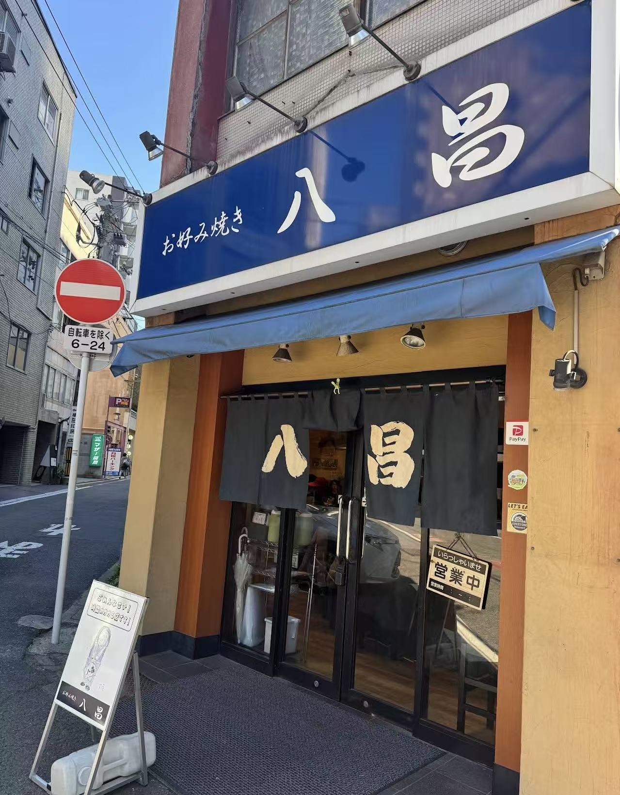

- トップ >
- お好み焼き
広島風お好み焼き特集
広島名物である広島風お好み焼きの有名店やおすすめ店を紹介します。 実際に食べた感想や写真を掲載し、それぞれのお店の魅力をお伝えします。
お好み焼き村

お好み焼き村は、広島市中心部にある人気のお好み焼きスポットです。 多くのお好み焼き店が集まっており、一つの場所でさまざまな味を楽しむことができます。 観光客だけではなく、地元の人にも親しまれている場所です。 実際に訪れてみると、お店ごとに違った雰囲気や味を楽しむことができました。
みっちゃん総本店

広島お好み焼きの元祖として有名なお店です。 たっぷりのキャベツと香ばしいソースが特徴で、観光客にも地元の人にも人気があります。 実際に食べてみると、生地がふんわりしていてとても美味しかったです。
八昌

広島を代表する人気店の一つです。 麺がパリパリに焼かれており、食感を楽しむことができます。 ボリュームもあり、満足感の高い一枚でした。